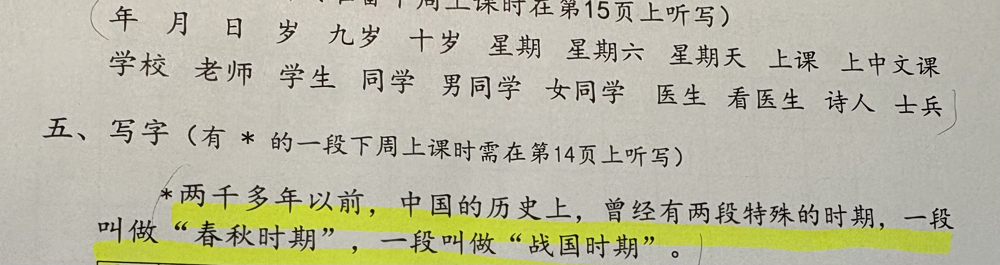

中文点读
像读纸上的课文一样，点哪里，就读哪里。
原纸点读↔ 左右滑动看整行，排版与原纸相同

点一下纸上的词语或正文短语
开始点读吧
查看完整文字
年 月 日 岁 九岁 十岁 星期 星期六 星期天 上课 上中文课
学校 老师 学生 同学 男同学 女同学 医生 看医生 诗人 士兵
五、写字（有 * 的一段下周上课时需在第14页上听写）
两千多年以前，中国的历史上，曾经有两段特殊的时期，一段叫做“春秋时期”，一段叫做“战国时期”。
像读纸上的课文一样，点哪里，就读哪里。

开始点读吧
年 月 日 岁 九岁 十岁 星期 星期六 星期天 上课 上中文课
学校 老师 学生 同学 男同学 女同学 医生 看医生 诗人 士兵
五、写字（有 * 的一段下周上课时需在第14页上听写）
两千多年以前，中国的历史上，曾经有两段特殊的时期，一段叫做“春秋时期”，一段叫做“战国时期”。